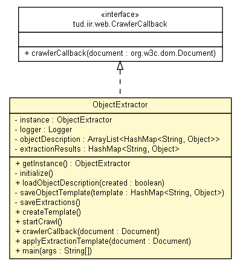

tud.iir.extraction.object
Class ObjectExtractor

java.lang.Object
 tud.iir.extraction.object.ObjectExtractor
tud.iir.extraction.object.ObjectExtractor
- All Implemented Interfaces:
- CrawlerCallback
public class ObjectExtractor
- extends java.lang.Object
- implements CrawlerCallback
| Methods inherited from class java.lang.Object |
clone, equals, finalize, getClass, hashCode, notify, notifyAll, toString, wait, wait, wait |
instance
private static ObjectExtractor instance
logger
private static final org.apache.log4j.Logger logger
objectDescription
private java.util.ArrayList<java.util.HashMap<java.lang.String,java.lang.Object>> objectDescription
extractionResults
private java.util.HashMap<java.lang.String,java.lang.Object> extractionResults
ObjectExtractor
private ObjectExtractor()
getInstance
public static ObjectExtractor getInstance()
- Get the instance of the ObjectExtractor, which itself is singleton.
- Returns:
- The ObjectExtractor instance.
initialize
private void initialize()
loadObjectDescription
public void loadObjectDescription(boolean created)
saveObjectTemplate
private void saveObjectTemplate(java.util.HashMap<java.lang.String,java.lang.Object> template)
saveExtractions
private void saveExtractions()
createTemplate
public void createTemplate()
startCrawl
public void startCrawl()
crawlerCallback
public void crawlerCallback(org.w3c.dom.Document document)
- Specified by:
crawlerCallback in interface CrawlerCallback
applyExtractionTemplate
public void applyExtractionTemplate(org.w3c.dom.Document document)
main
public static void main(java.lang.String[] args)